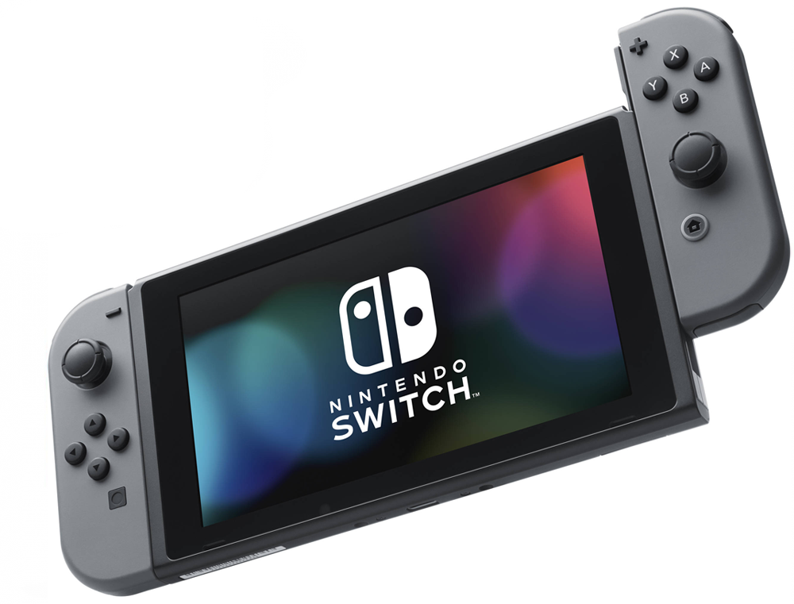
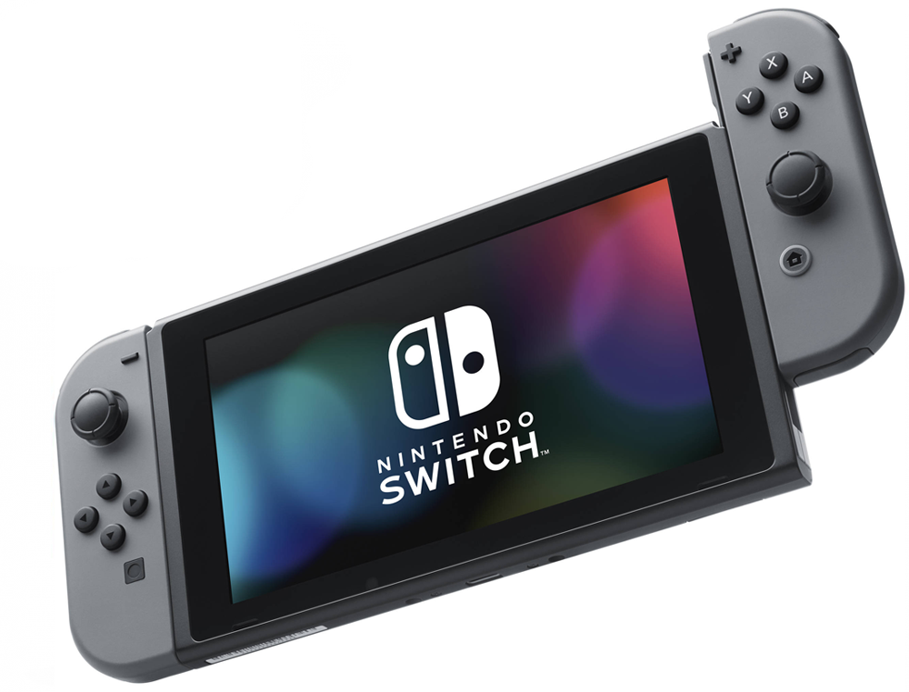

Nintendo Switch — гибридная игровая консоль, разработанная японской компанией Nintendo. Nintendo Switch совмещает в себе свойства домашней игровой приставки и портативной игровой системы и может использоваться в обоих качествах. На этапе разработки Nintendo Switch носила кодовое название «Nintendo NX», была впервые продемонстрирована в октябре 2016 года и выпущена в продажу во всём мире 3 марта 2017 года.
Nintendo Switch может работать как домашняя игровая приставка — в этом случае основное устройство приставки вставляется в специальную док-станцию, присоединённую к телевизору, и экран телевизора используется как средство вывода. Вне док-станции Nintendo Switch использует собственный сенсорный ЖК-экран — игрок может держать консоль в руках и взаимодействовать с ней как с планшетным компьютером либо разместить на столе перед несколькими участвующими в игре игроками, наподобие миниатюрного телевизора. Беспроводные контроллеры Joy-Con (джойконы), входящие в комплект с консолью, также можно использовать разными способами: прикрепить к обеим сторонам консоли для игры в портативном режиме, вставить их в аксессуар Grip, чтобы получить форму традиционного геймпада для домашней консоли, или использовать их отдельно от консоли как Wii Remote. Консоль не использует блокировку по региону.
 
